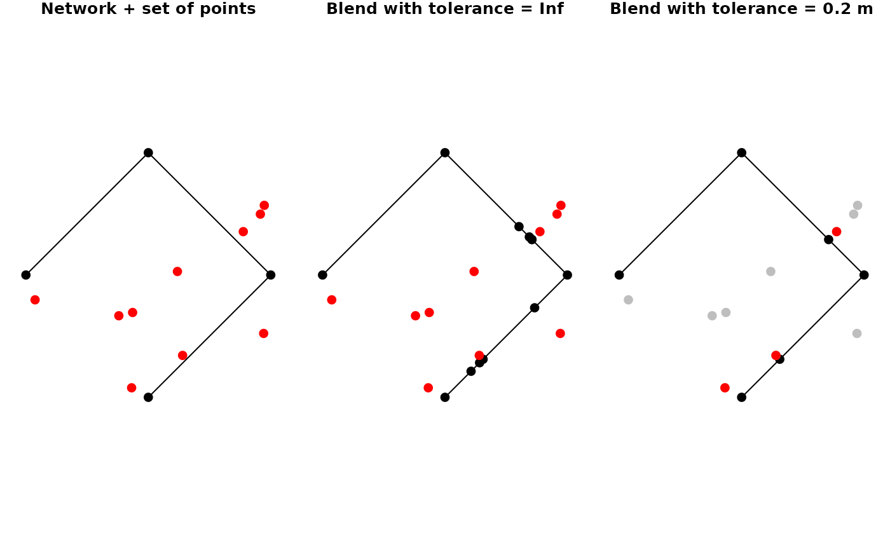

Blending a point into a network is the combined process of first snapping the given point to its nearest point on its nearest edge in the network, subsequently splitting that edge at the location of the snapped point, and finally adding the snapped point as node to the network. If the location of the snapped point is already a node in the network, the attributes of the point (if any) will be joined to that node.
st_network_blend(x, y, tolerance = Inf, sort = FALSE)
| x | An object of class |
|---|---|
| y | The spatial features to be blended, either as object of class
|
| tolerance | The tolerance distance to be used. Only features that are
at least as close to the network as the tolerance distance will be blended.
Should be a non-negative number preferably given as an object of class
|
| sort | Should the nodes in the resulting network be sorted in the same
order as those in x, followed by the new nodes blended in from y? Defaults
to |
An object of class sfnetwork.
Due to internal rounding of rational numbers, it may occur that the intersection point between a line and a point is not evaluated as actually intersecting that line by the designated algorithm. Instead, the intersection point lies a tiny-bit away from the edge. Therefore, it is recommended to set the tolerance to a very small number (say 1e-5) even if you only want to blend points that intersect the line.
library(sf, quietly = TRUE) # Create a network and a set of points to blend. n11 = st_point(c(0,0)) n12 = st_point(c(1,1)) e1 = st_sfc(st_linestring(c(n11, n12)), crs = 3857) n21 = n12 n22 = st_point(c(0,2)) e2 = st_sfc(st_linestring(c(n21, n22)), crs = 3857) n31 = n22 n32 = st_point(c(-1,1)) e3 = st_sfc(st_linestring(c(n31, n32)), crs = 3857) net = as_sfnetwork(c(e1,e2,e3)) pts = net %>% st_bbox() %>% st_as_sfc() %>% st_sample(10, type = "random") %>% st_set_crs(3857) %>% st_cast('POINT') # Blend points into the network. # --> By default tolerance is set to Inf # --> Meaning that all points get blended b1 = st_network_blend(net, pts)#> Warning: st_network_blend assumes attributes are constant over geometriesb1#> # A sfnetwork with 12 nodes and 11 edges #> # #> # CRS: EPSG:3857 #> # #> # A rooted tree with spatially explicit edges #> # #> # Node Data: 12 x 1 (active) #> # Geometry type: POINT #> # Dimension: XY #> # Bounding box: xmin: -1 ymin: 0 xmax: 1 ymax: 2 #> x #> <POINT [m]> #> 1 (0 0) #> 2 (0.2185961 0.2185961) #> 3 (0.4759297 0.4759297) #> 4 (0.545887 0.545887) #> 5 (0.5471001 0.5471001) #> 6 (0.6232963 0.6232963) #> # … with 6 more rows #> # #> # Edge Data: 11 x 3 #> # Geometry type: LINESTRING #> # Dimension: XY #> # Bounding box: xmin: -1 ymin: 0 xmax: 1 ymax: 2 #> from to x #> <int> <int> <LINESTRING [m]> #> 1 1 2 (0 0, 0.2185961 0.2185961) #> 2 2 3 (0.2185961 0.2185961, 0.4759297 0.4759297) #> 3 3 4 (0.4759297 0.4759297, 0.545887 0.545887) #> # … with 8 more rows# Blend points with a tolerance. tol = units::set_units(40, "km") b2 = st_network_blend(net, pts, tolerance = tol)#> Warning: st_network_blend assumes attributes are constant over geometriesb2#> # A sfnetwork with 12 nodes and 11 edges #> # #> # CRS: EPSG:3857 #> # #> # A rooted tree with spatially explicit edges #> # #> # Node Data: 12 x 1 (active) #> # Geometry type: POINT #> # Dimension: XY #> # Bounding box: xmin: -1 ymin: 0 xmax: 1 ymax: 2 #> x #> <POINT [m]> #> 1 (0 0) #> 2 (0.2185961 0.2185961) #> 3 (0.4759297 0.4759297) #> 4 (0.545887 0.545887) #> 5 (0.5471001 0.5471001) #> 6 (0.6232963 0.6232963) #> # … with 6 more rows #> # #> # Edge Data: 11 x 3 #> # Geometry type: LINESTRING #> # Dimension: XY #> # Bounding box: xmin: -1 ymin: 0 xmax: 1 ymax: 2 #> from to x #> <int> <int> <LINESTRING [m]> #> 1 1 2 (0 0, 0.2185961 0.2185961) #> 2 2 3 (0.2185961 0.2185961, 0.4759297 0.4759297) #> 3 3 4 (0.4759297 0.4759297, 0.545887 0.545887) #> # … with 8 more rows## Plot results. # Initial network and points. par(mar = c(1,1,1,1), mfrow = c(1,3)) plot(net, cex = 2, main = "Network + set of points") plot(pts, cex = 2, col = "red", pch = 20, add = TRUE) # Blend with no tolerance plot(b1, cex = 2, main = "Blend with tolerance = Inf") plot(pts, cex = 2, col = "red", pch = 20, add = TRUE) # Blend with tolerance. within = st_is_within_distance(pts, st_geometry(net, "edges"), tol) pts_within = pts[lengths(within) > 0] plot(b2, cex = 2, main = "Blend with tolerance = 40 km")